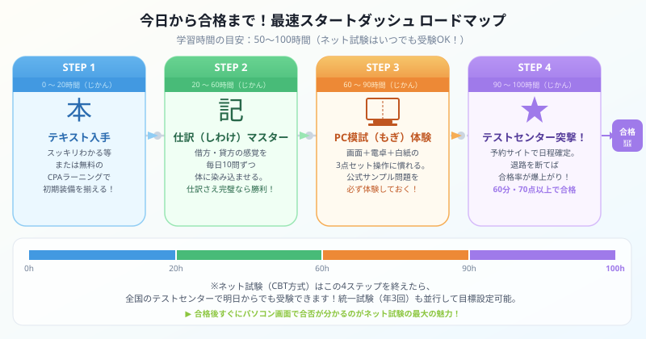

著者・大谷からひとこと
こんにちは、大谷です！
よく「簿記3級の次の試験日っていつですか？半年後ですか？」と聞かれるのですが、答えは【明日でも、来週でも、いつでも受けられます！】です（笑）。
今の時代はパソコンでいつでも受けられる便利な【ネット試験】がメインです。僕も初めて知ったときは「えっ、年3回じゃないの！？なんじゃこりゃ、めっちゃ便利じゃん！」と感動しました。
今回は、今この瞬間から最短で合格ステータスを手に入れるための「最速スタートダッシュ手順」を優しくナビゲートします。
また、モチベ維持のために、記事の末尾にある【いいねボタン】もポチッと押してもらえると、めちゃくちゃ励みになります！

図：4ステップ・50〜100時間の最速合格ロードマップ（ネット試験は4ステップ完了後すぐに受験できます）
日商簿記3級には「ネット試験（CBT方式）」と「統一試験（紙の試験）」の2種類があります。今すぐ動くなら、圧倒的にネット試験がおすすめです。
| 項目 | 内容 |
|---|---|
| 受験日程 | 全国のテストセンターが指定する日程でほぼ毎日受験可能 |
| 試験時間 | 60分 |
| 合格基準 | 70点以上（100点満点） |
| 結果発表 | 試験終了後、パソコン画面にその場で合否が表示される |
| 受験方法 | 受験申込サイト（Prometric / CBT-Solutions など）から予約し、テストセンターへ持参 |
| 合格証書 | 後日、所属の商工会議所から郵送 |
統一試験は日本商工会議所が年3回実施する、昔ながらの紙の試験です。受験仲間と一緒に本番の雰囲気を体験したい人や、学校のカリキュラムで日程が決まっている人に向いています。
| 回次 | 開催予定時期 | 試験時間 | 備考 |
|---|---|---|---|
| 第123回 | 2026年11月15日（日）予定 | 60分 | 合格点70点以上 |
| 第124回 | 2027年2月28日（日）予定 | 60分 | 合格点70点以上 |
| 第125回 | 2027年6月（第2日曜）予定 | 60分 | 日程は公式発表待ち |
※ 日程は各地の商工会議所による案内・公式サイトで確定。上記はパターンから推定した目安日程です。受験前に必ず日本商工会議所の公式サイトで確認してください。
「よし、受けよう！」と決めたなら、今日から以下の4ステップを順番に実行するだけです。余計なことは考えなくていいです。このルートだけを走り切ってください。
初期装備を揃える（テキスト or 無料動画）【0〜20時間】
学習の入口は2択です。どちらでも合格できるので、自分の性格に合う方を選んでください。
仕訳（しわけ）の素振りを毎日積み重ねる【20〜60時間】
簿記3級の合否は「仕訳の正確さ」でほぼ決まります。仕訳さえマスターすれば、残りの問題（精算表・貸借対照表）はそこから派生するだけです。
このサイトの「ゼロからの簿記」シリーズで、借方・貸方の仕組みから丁寧に解説しています。テキストを読み終わったら、各論点の仕訳を1日10〜20問ずつ反復してください。
「視線移動」に慣えるPC模試を体験する【60〜90時間】
ネット試験では「画面の問題を見る → 手元の白紙で計算する → 画面に戻って入力する」という視線の往復が常に発生します。紙の試験と感覚がかなり違うので、事前に慣れておくことが絶対に必要です。
事前準備として必ずやること：
予約してテストセンターに突撃！退路を断つ【90〜100時間】
勉強を始めたら「すべて終わってから予約しよう」は絶対NGです。人間は締め切りがないと動けない生き物です。学習の途中でも、今すぐ受験日を確定させて退路を断つことが合格率を爆上がりさせます。
予約の手順：
初めてネット試験を受ける方のために、当日の流れを簡単に説明します。怖くありません。慣れたコンビニのセルフレジより簡単です（笑）。
| 時間 | やること |
|---|---|
| 開始10分前 | テストセンターに到着。受付で本人確認書類を提示 |
| 開始直前 | 荷物をロッカーに預け、白紙（メモ用紙）と鉛筆が渡される。電卓は持参したものを使用可 |
| 開始〜60分 | パソコン画面の問題を解く。第1問（仕訳5問）→ 第2問（補助簿）→ 第3問（精算表 or 財務諸表）の構成 |
| 試験終了後 | 画面に合否（点数）が即座に表示される。合格なら受付でスコアレポートをもらって退場 |
| 数週間後 | 合格証書が所属商工会議所から届く |
さっそく勉強を始めよう！まずは仕訳の仕組みから
「ゼロからの簿記 第4回：仕訳のしくみ・借方と貸方とは？」は、完全な初心者でも借方・貸方の感覚が身につく入門記事です。合格への旅はここから始まります！
仕訳のしくみを学ぶ →この記事、お役に立てましたか？
この記事が少しでも参考になったら、この下にある【いいねボタン】をポチッと押してもらえると、めちゃくちゃ励みになります！皆さんのひと押しが、次の記事を書く力になります。
一緒に合格ステータスをゲットしましょう！